Тема этого занятия – реализация учета товаров в системе. Учет товаров нужен для того, чтобы игрок смог покупать и продавать товары, чтобы получать прибыль. Товары для покупки и на продажу будут одни и те же. Например, игрок купил мятный шарик для кошек за 100 рублей, а продал с небольшой наценкой, чтобы заработать.
В рамках этого занятия мы выполним 2 задачи:
Необходимо выбрать механизм, который позволит хранить список товаров. Данный механизм мы изучили на прошлом занятии – это "справочник".
Добавим новый справочник, нажав правой кнопкой мыши по ветке "Справочники" и выбрав "Добавить". Имя справочника – "Товары" (рис. 2.1).
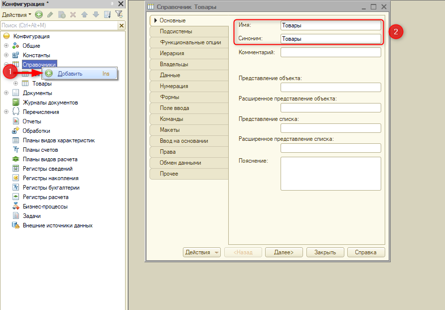
Рис. 2.1. Добавление справочника "Товары"
Для каждого товара необходимо указывать цену. Добавим новый реквизит на вкладке "Данные". Имя – "Цена", тип – "число", длина – 10, неотрицательное (рис. 2.2).
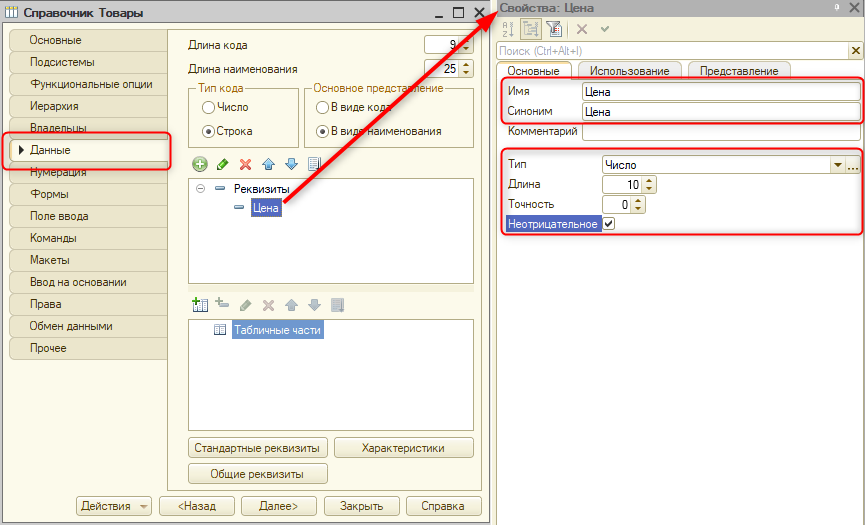
Рис. 2.2. Добавление реквизита "Цена"
Обновим конфигурацию базы данных и перейдем в пользовательский режим, чтобы поработать с данным справочником.
Отроем справочник "Товары" и создадим несколько позиций. Например, "мятный шарик" по цене 150 (рис. 2.3).
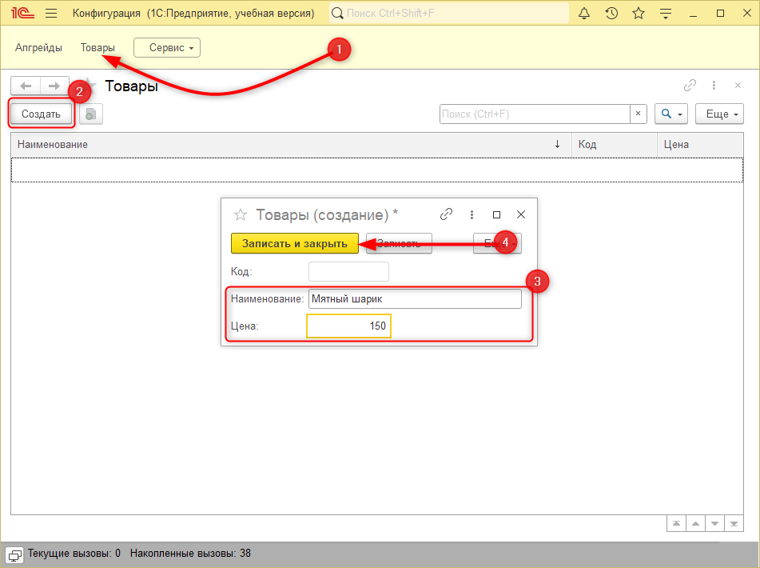
Рис. 2.3. Добавление нового товара
Добавим еще одну товарную позицию, например, "Сухой корм для собак" (рис. 2.4).
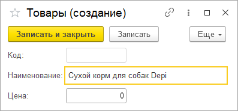
Рис. 2.4. Добавление нового товара
В данный момент для полного названия корма не хватило места. Это связано с тем, что стандартная длина наименования ограничена (25 символов). Если этой длины недостаточно, необходимо произвести соответствующие настройки.
Закроем режим пользователя и перейдем в конфигуратор.
Увеличить длину реквизита "Наименование" до 150 символов можно на вкладке "Данные" окна редактирования справочника "Товары" (рис. 2.5).
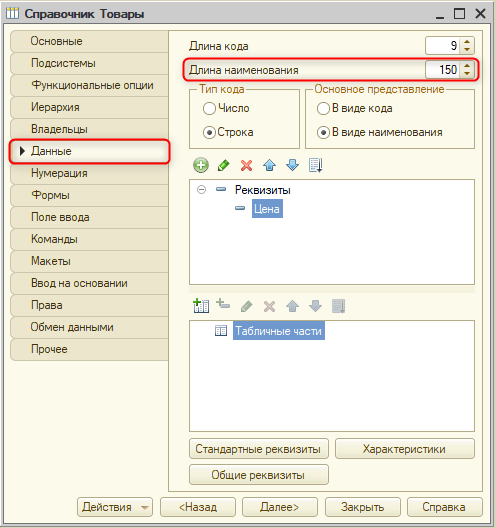
Рис. 2.5. Изменение длины реквизита "Наименование"
После изменения длины реквизита необходимо подтвердить ввод нового значения, чтобы появилась иконка с синим бочонком – обновление конфигурации базы данных. Подтвердить ввод можно, например, нажав на клавишу Enter.
Обновим конфигурацию базы данных и перейдем в пользовательский режим.
В справочнике "Товары" допишем наименование товара и цену (рис. 2.6) и сохраним.
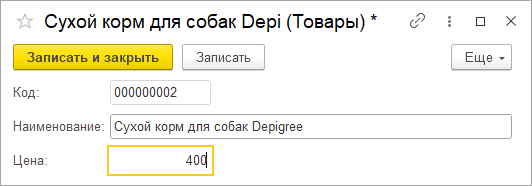
Рис. 2.6. Изменение данных товара
Однако товары могут быть не только для продажи, но и для внутреннего потребления: ручки, карандаши, бумага и тому подобное.
Необходимо отделить товары для продажи от товаров для фирмы.
Создадим новый товар для внутреннего использования. Наименование – "Бумага", цена – 50 (рис. 2.7).
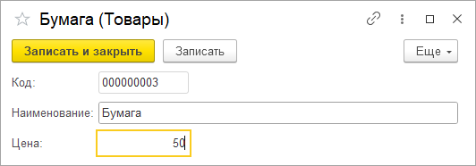
Рис. 2.7. Добавление нового товара
Для того чтобы разделить данные, потребуется добавить еще одну колонку – "Вид товара".
Видов товаров может быть огромное множество, например, товары для фирмы, лакомства, корма и т. д. Также количество видов товаров может быть расширено по желанию игрока. Возможно, он захочет продавать еще и мягкие игрушки. |
Следовательно, для хранения видов товаров потребуется создать справочник.
Закроем пользовательский режим и перейдем в конфигуратор.
Добавим новый справочник с именем "ВидыТоваров" (рис. 2.8).
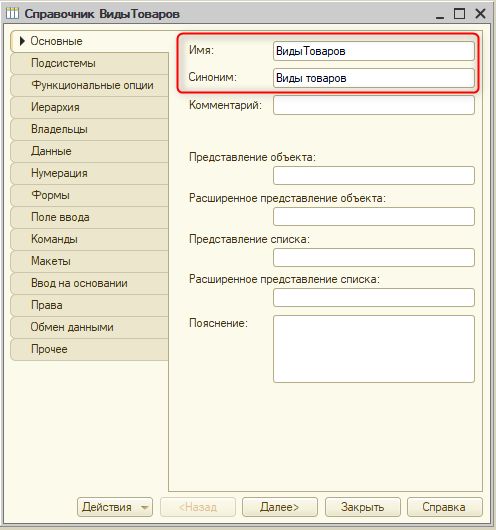
Рис. 2.8. Добавление нового справочника
На вкладке "Данные" укажем максимальную длину наименования – 150 символов (рис. 2.9).
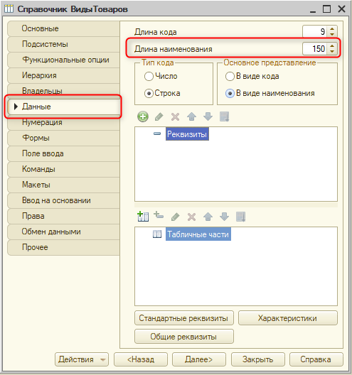
Рис. 2.9. Изменение длины наименования
Чтобы в дальнейшем было удобнее выделять товары внутреннего потребления, необходимо создать предопределенный элемент справочника.
Предопределенные элементы создаются в режиме "Конфигуратор" и обладают уникальным именем, которое в дальнейшем можно использовать при программировании. С его помощью можно будет однозначно определить, какие товары не требуется учитывать для получения дохода. |
Чтобы создать предопределенный элемент, нужно перейти на вкладку "Прочее" и нажать на кнопку "Предопределенные" (рис. 2.10).
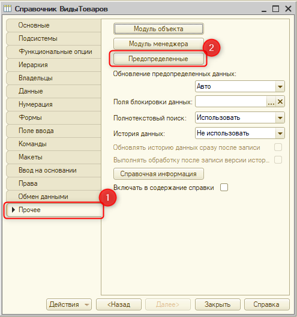
Рис. 2.10. Вкладка "Прочее" справочника
В разделе предопределенных создадим новый предопределенный элемент по кнопке "Добавить" (рис. 2.11).
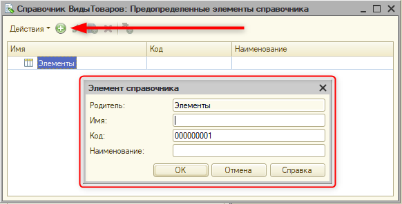
Рис. 2.11. Добавление предопределенного элемента
Для создаваемого элемента необходимо указать имя – это системный идентификатор, который останется в конфигураторе. Он должен быть указан по правилам именования: слитное написание слов, нельзя указывать цифры в начале. Код и наименование – это то, что увидит игрок в пользовательском режиме.
Имя нового предопределенного элемента – "ТоварыВнутреннегоИспользования", наименование заполнится автоматически после нажатия на клавишу Enter. После заполнения полей "Имя" и "Наименование" нажмем на кнопку "Ок" (рис. 2.12).
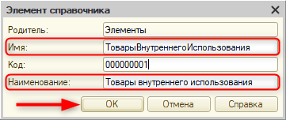
Рис. 2.12. Создание предопределенного элемента
Следующее, что необходимо сделать, – это добавить реквизит "Вид товара" в справочник "Товары".
Закроем окно редактирования справочника "Виды товаров" и вернемся к справочнику "Товары".
На вкладке "Данные" необходимо добавить новый реквизит. Имя реквизита – "ВидТовара", тип – "СправочникСсылка.ВидыТоваров" (рис. 2.13).
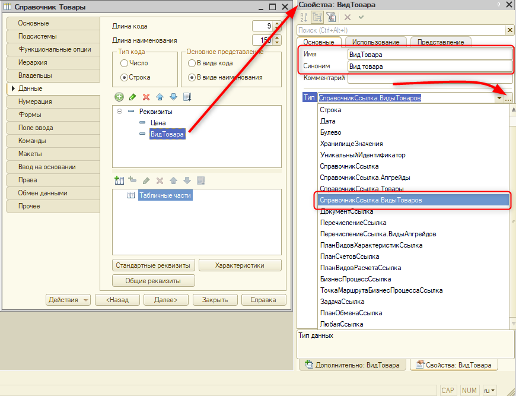
Рис. 2.13. Добавление нового реквизита "ВидТовара" в справочник "Товары"
Обновим конфигурацию базы данных и перейдем в пользовательский режим.
В пользовательском режиме необходимо заполнить справочник "Виды товаров". Здесь уже есть созданный ранее предопределенный элемент "Товары внутреннего использования". Он отличается от остальных элементов пометкой в виде желтого шарика.
Создадим несколько видов товаров, например, "Корм" и "Лакомство" (рис. 2.14).
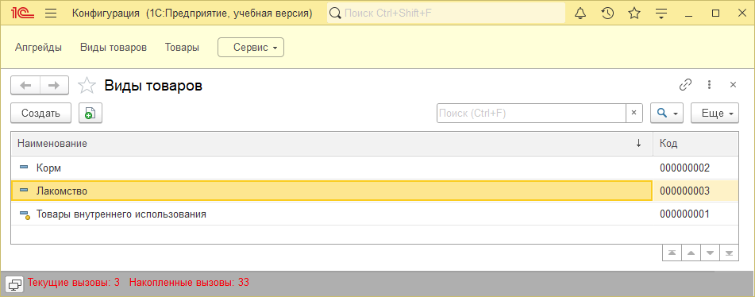
Рис. 2.14. Заполнение справочника "Виды товаров"
Далее необходимо перейти в справочник "Товары" и указать виды товаров у созданных товарных позиций.
Откроем карточку элемента "Бумага" и укажем, что это – товар внутреннего использования. С помощью кнопки "Показать все" можно развернуть весь список доступных видов товаров и выбрать "Товары внутреннего использования" (рис. 2.15 – 2.16). После выбора вида товара необходимо записать информацию с помощью кнопки "Записать и закрыть" (рис. 2.17).
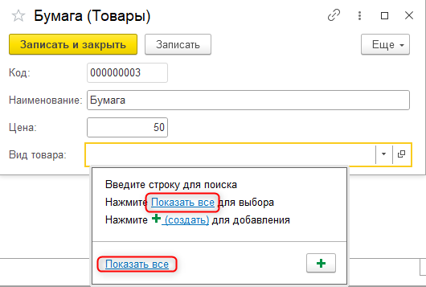 |
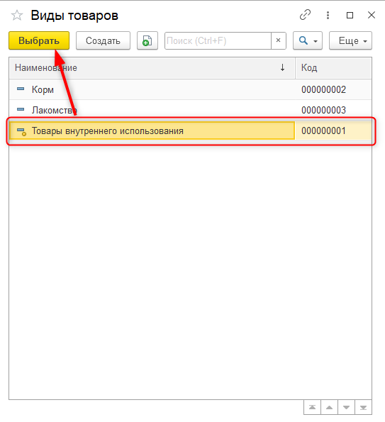 |
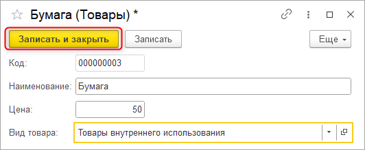 |
Рис. 2.15. Работа с карточкой товара "Бумага" |
Рис. 2.16. Выбор вида товара |
Рис. 2.17. Сохранение информации в базе |
Укажем вид товара для мятного шарика. Найти нужный вид товара можно не только через "Показать все", но и с помощью ввода по строке. В поле "Вид товара" начнем вводить слово "лакомство", в выпадающем списке выберем нужный элемент (рис. 2.18). Сохраним внесенные изменения. Аналогично поступим с товаром "Сухой корм". С помощью поиска найдем вид товара "Корм" и сохраним внесенные изменения (рис. 2.19).
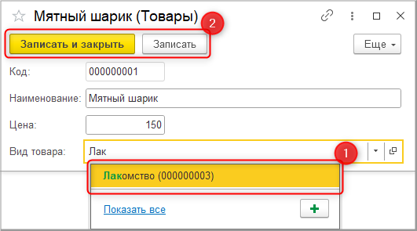 |
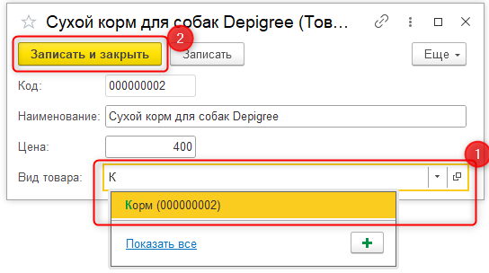 |
Рис. 2.18. Ввод по строке |
Рис. 2.19. Внесение изменений в карточку товара "Сухой корм" |
На этом второе занятие окончено!
На этом занятии мы добавили два новых справочника в информационную систему: первый позволяет указывать товары и их цены, а другой отвечает за разнообразие видов товаров. Один справочник связан с другим, поэтому для каждого товара можно указывать любой из видов, который определяется в соответствующем справочнике.
На следующем занятии мы создадим объекты, которые будут фиксировать данные о покупке товаров игроком, а также о заказах покупателей.
Это нужно запомнить |
|
Предопределенные элементы создаются в режиме "Конфигуратор" и обладают уникальным именем, которое в дальнейшем можно использовать при программировании. С его помощью можно будет однозначно определить, какие товары не требуется учитывать для получения дохода. |
|